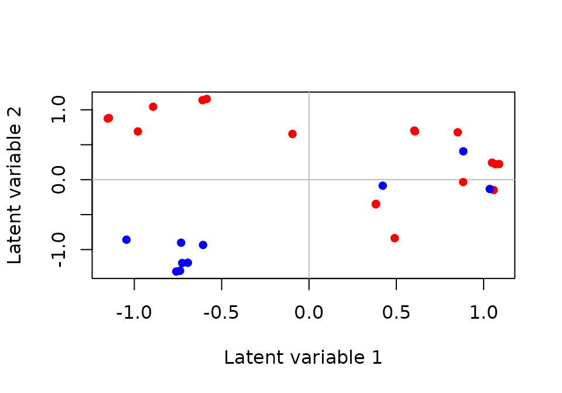
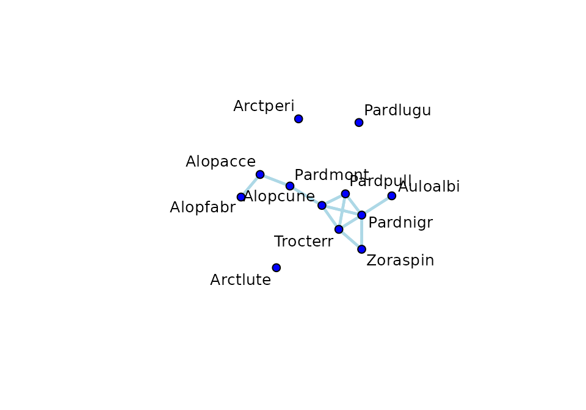
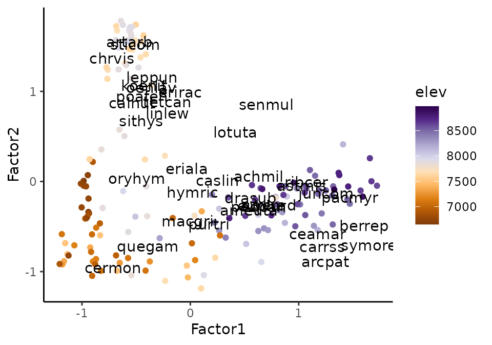

ecoCopula package for model based ordination and graphical modelling in ecology
ecoCopula.RmdOverview
The ecoCopula package allows you to visualise multivariate discrete data with graphical models and ordination. The package was designed primarily for multivariate abundance data in ecology, however it can be applied to any multivariate discrete data.
The two main functions are:
- Copula ordination (
cord) to visualise how samples (sites) and variables (taxa) are located along several latent variables (unobserved environmental gradient). - Copula graphical models (
cgr) to plot a graph which distinguishes between direct and indirect associations between variables (e.g taxa).
The ecoCopula package used model-based methods (rather than
distance-based, e.g. nMDS). Both cord and cgr
will work on either a stackedsdm object (stacked species
distribution model, from ecoCopula) or a manyglm object
(from mvabund).
Under the hood
Copulas for discrete data
Copulas are a way to construct a multivariate distribution, and can be used as an alternative to hierarchical models (as in gllvm, HMSC, boral) and generalised estimating equations (GEE; as in mvabund). Like hierarchical models, but unlike GEEs, copulas directly model covariance between variables (taxa). The main advantage of copulas relative to hierarchical models is speed, with copula ordination usually being at least 10 times faster than ordination with hierarchical models, and for large sample sizes faster non-metric multidimensional scaling (nMDS). For more details about copulas and how models are fit in ecoCopula see Popovic et. al. (2018,2019).
Copula ordination
Model based ordination methods, including copula ordination using the
cord function as well as gllvm,
boral and HMSC, are implemented with latent
variables. These can be interpreted as unobserved environmental
covariates. Biplots are created by plotting the scores of sites and
loadings of taxa. By directly modelling the data, model-based methods
account for both the natural variation mean-variance relationships in
multivariate abundance data. We can use standard statistical tools to
check the assumptions and perform model selection, quantify the
uncertainty in the estimated correlations between taxa, and predict to
existing and/or new sites, all of which are generally more challenging
when using dissimilarity-based ordination methods (like nMDS).
Copula graphical models
Graphical models look at direct and indirect associations between variables (taxa). They try to answer the question: Is the abundance of this pair of taxa related, after accounting for the effect of the abundances of all the other taxa in the data? A simple and crude way to do this might be regressing each of the two taxa separately (as response) against all the other taxa in the data (as predictors), and then looking for any residual correlation between the pair. Graphical models do something like this, but using modern statistical techniques to improve efficiency and model the community jointly.
Install ecoCopula in the usual way.
install.packages("ecoCopula")Then attach the library.
Hunting spiders (counts and presence/absence)
The hunting spider dataset (van der Aart &
Smeenk-Enserink, 1975) has counts of 12 hunting spiders at 28 sites,
collected using pit traps, as well as 6 environmental covariates.
Species codes are first four letters of genus then first four letters of
species. We will analyse it both as counts and presence-absence.
# spider data is stored in ecoCopula
data(spider)
X <- as.data.frame(spider$x) # environmental covariatesCounts
abund <- spider$abund # abundance of spiders
abund[1:5,1:6]
#> Alopacce Alopcune Alopfabr Arctlute Arctperi Auloalbi
#> [1,] 25 10 0 0 0 4
#> [2,] 0 2 0 0 0 30
#> [3,] 15 20 2 2 0 9
#> [4,] 2 6 0 1 0 24
#> [5,] 1 20 0 2 0 9Presence-absence
pa=(abund>0)*1 # presence-absence of spiders
pa[1:4,1:6]
#> Alopacce Alopcune Alopfabr Arctlute Arctperi Auloalbi
#> [1,] 1 1 0 0 0 1
#> [2,] 0 1 0 0 0 1
#> [3,] 1 1 1 1 0 1
#> [4,] 1 1 0 1 0 1Ordination
To plot an ordination biplot for presence-absence data
pa, we first fit a marginal model using
stackedsdm or manyglm with
family="binomial", then use the copula ordination function
cord on the resulting object, and plot the
output.
# fit marginal model
spider_pa <- stackedsdm(pa,~1, data = X, family="binomial",ncores = 2) #eqiv. manyglm()
# fit copula ordination
spid_lv=cord(spider_pa)
# biplot
plot(spid_lv,biplot = TRUE)
To colour the sites by a predictor, we can create a colour variable.

To check that we fit a sensible model we can plot residuals
plot(spider_pa). For fancier graphics with
ggplot see ?plot.cgr.
Graphical model
To plot a graph of the spider counts abund, we
again first fit a marginal model using stackedsdm or
manyglm with family="negative.binomial" (for
counts).For graphical models it makes the most sense to first control
for environmental variables, so that associations between taxa control
for those. Then we use the copula graph function cgr on the
resulting object, and plot the output.
# fit marginal model
spider_nb <- stackedsdm(abund,~., data = X, family="negative.binomial", ncores = 2) #eqiv. manyglm()
# fit copula ordination
spid_gr=cgr(spider_nb, seed=3)
# biplot
plot(spid_gr, pad=1)
Graphs are interpreted as maps of direct and indirect associations between taxa.
taxa pairs that have no direct edge between them (e.g Pardmont and Trocterr) have no direct association, so any co-occurrence patterns they have are due to associations they both have with other taxa in the data (mediator species, e.g. Alopcune).
taxa with direct edges between them have positive associations (blue; e.g. Alopacce and Alopfabr), or negative associations (pink; none found) even after controlling for mediation effects of all the other taxa in the data.
One interpretation is that taxa with direct edges are interacting, though this can only be a hypothesis, as there may be unobserved taxa or environmental variables which could be causing the apparent interaction. The main objective of this analysis is to visualise relationships in order to generate hypotheses to be experimentally tested.
To check that we fit a sensible model we can plot residuals
plot(spider_nb). For fancier plots with ggplot
and igraph see ?plot.cgr.
Bryce Canyon vegetation ordinal cover
These data contain estimates of cover class for all non-tree vascular
plant species in 160 375m^2 circular sample plots and associated
environmental variables in Bryce Canyon National Park, Utah, U.S.A.
Species codes are first three letters of genus then first three letters
of specific epithet. We can download the data from the
labdsv package, it is in two parts brycesite
gives the site data and bryceveg the cover data.
library(labdsv)
# site data
data(brycesite)
brycesite$plotcode=substr(brycesite$plotcode,3,5)
#species data
data(bryceveg)
bryceveg<- bryceveg[,-which(colSums(bryceveg>0) <= 20)] #most abundant speciesTo model ordinal data in stackedsdm we need the
categories to be integers starting at 1.
#recode data to integer categories
old <- c(0,0.2,0.5,1,2,3,4,5,6) #existing categories
bryceord=bryceveg
for(i in 1:length(old)){
bryceord[bryceveg==old[i]]=i
}
#marginal model
bryce_marg <- stackedsdm(bryceord, formula_X = ~ 1, data = brycesite, family="ordinal",ncores = 2)Ordination
bryce_ordi=cord(bryce_marg)We plot the ordinations with ggplot, colouring sites by
elevation gradient. If we had traits we could color species by
traits.
library(RColorBrewer)
library(ggplot2)
# data frames for plotting
site_res <- data.frame(bryce_ordi$scores,brycesite)
sp_res <- data.frame(bryce_ordi$loadings,
species = colnames(bryceord))
alpha= 2.5 # scaling parameter
ggplot()+
geom_point(aes(x=Factor1,y=Factor2,color = elev ),site_res)+ #sites
geom_text(aes(x = Factor1*alpha, y = Factor2*alpha,label = species),data=sp_res)+ #species
scale_color_gradientn(colours = brewer.pal(n = 10, name = "PuOr"))+
theme_classic()
Low elevation and high elevation sites have quite different species, with low elevations associated with e.g. cermon, and high elevation with e.g. pacmyr.
Graphical model of veg species
We will control for slope.
cont_preds=sapply(brycesite, class)%in%c("int","num")
brycesite[,cont_preds]=scale(brycesite[,cont_preds])
bryce_marg_all <- stackedsdm(bryceord, formula_X = ~ slope, data = brycesite,
family="ordinal",ncores = 2)
bryce_graph<-cgr(bryce_marg_all, seed = 1) #seed for demonstrationFor more detailed plots cgr has an igraph output, which
you can manipulate and plot with the tidygraph and
ggraph packages as well as the igraph
package.
igraph_out<-bryce_graph$best_graph$igraph_out
library(tidyr)
library(tidygraph)
library(ggraph)
igraph_out %>% ggraph('fr') + # see ?layout_tbl_graph_igraph
geom_edge_fan0(aes( colour = partcor, width=partcor)) +
scale_edge_width(range = c(0.5, 3))+
scale_edge_color_gradient2(low="#b2182b",mid="white",high="#2166ac")+
geom_node_text(aes(label=name), repel = TRUE)+
geom_node_point(size=2)+
theme_void() +
theme(legend.position = 'none') There is a strong positive association between e.g. ceamar and arcpat
after controlling for all the other species.
There is a strong positive association between e.g. ceamar and arcpat
after controlling for all the other species.
Other ecoCopula functionality and notes
stackedsdmcan take a vector of families, this means each column can have a different distribution. This is most often useful when modelling traits rather than abundance (some of which are binary, and some continuous), but could also be useful if you have abundance data collected differently for different taxa (some presence/absence, some counts, some ordinal)Residual ordination: by including predictors in the
stackedsdmormanyglmmodel, you are controlling for these. Any ordination you will control for the effect of these variables. This might make it easier to see the effect of other variables.It is not uncommon for
cgrto output a graph with no edges. The final model you plot is the best model chosen by BIC. With a small amount of data this is often a model with no associations. The models are indexed by the shrinkage parameterlambda, and given graphical modelling is exploratory, you can further explore different models by changing lambda manually. You can find the shrinkage parameter for the best model withcgr_fit$all_graphs$lambda.optwhere cgr_fit is your fittedcgrobject. Smaller values of lambda give more dense graphs with more edges. You can then fit a model with a smaller lambda with thelambdaargument incgr.Both
cordandcgrhave an.sampargument. If you find different runs of these functions give different results, try increasingn.samp.
References
Aart, P. J. M. van der & N. Smeenk-Enserink 1975. Correlations between distributions of hunting spiders (Lycosidae, Ctenidae) and environmental characteristics in a dune area. Neth. J. Zool, 25, 1-45.
Popovic, G. C., Hui, F. K., & Warton, D. I. (2018). A general algorithm for covariance modeling of discrete data. Journal of Multivariate Analysis, 165, 86-100.
Popovic, G. C., Warton, D. I., Thomson, F. J., Hui, F. K., & Moles, A. T. (2019). Untangling direct species associations from indirect mediator species effects with graphical models. Methods in Ecology and Evolution, 10(9), 1571-1583.
Roberts D.W. (1992): Plant Community Distribution and Dynamics in Bryce Canyon National Park: Final Report for Project PX 1200-7-0966